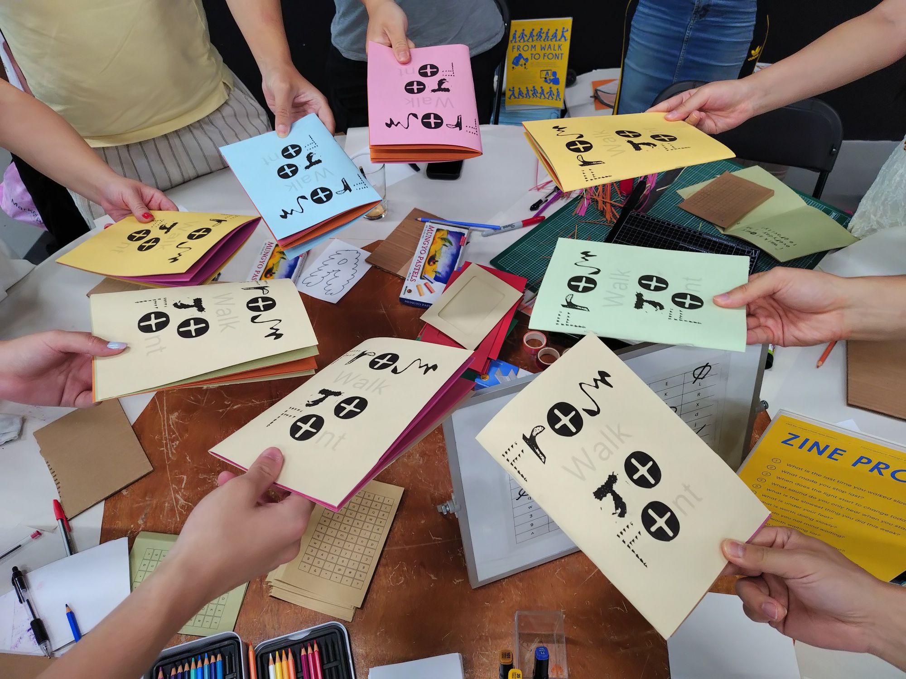
From Hand to Font
This is a passion project I started to practice my AI and front-end coding skills while contributing to the community. It is a community-based project that invites non-designers to create their own fonts.
Participants draw the alphabet by hand, and their drawings are converted on the spot into a typeable digital font. As a token of gratitude for participating, each participant receives a zine that is also printed on site.
Thank you to Market Root, Rhizomatic, Create Space London, Kindred Studio, Bremen Zine Festival, Tagore’s Salon (+ Set91), and Glasgow Zine Library for accepting my proposal and providing venues and relevant materials.
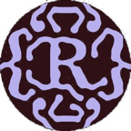
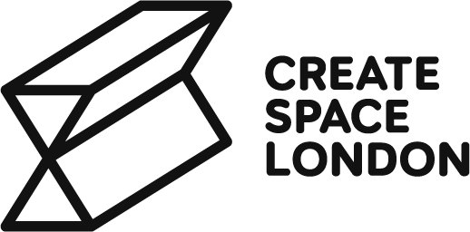
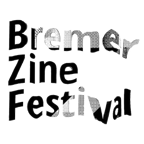
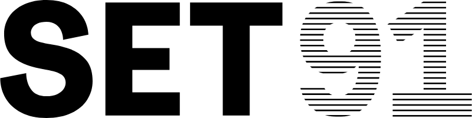
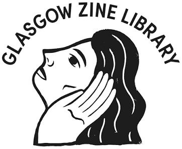
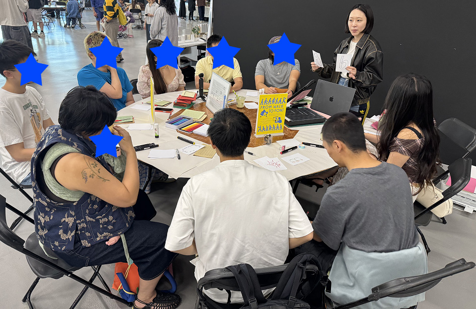
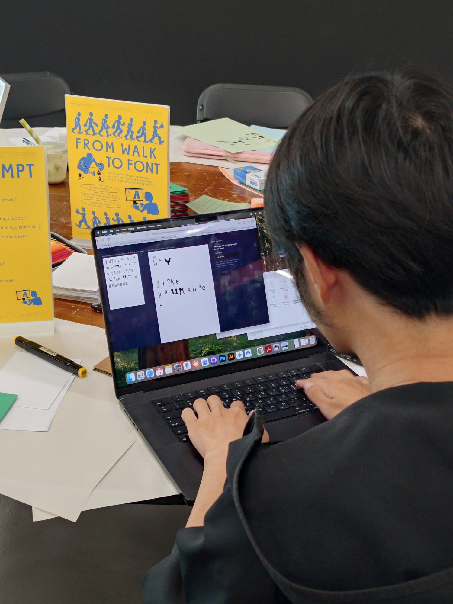
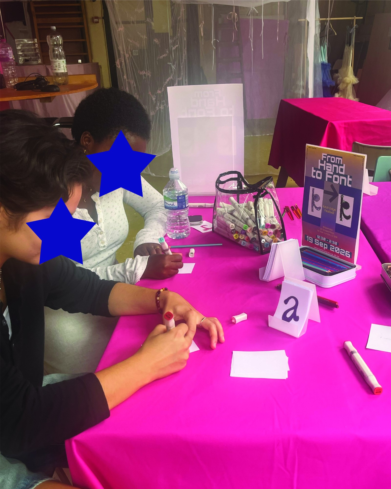
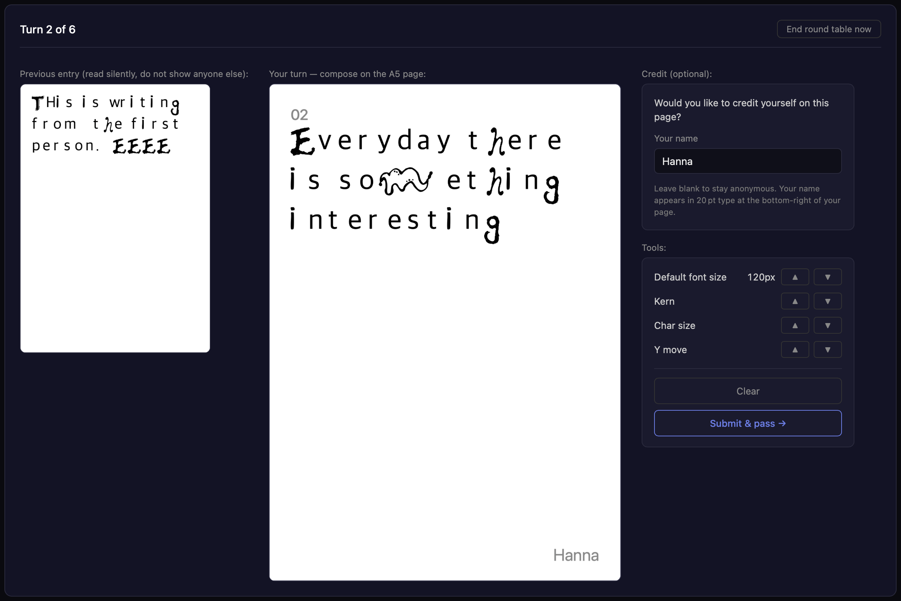
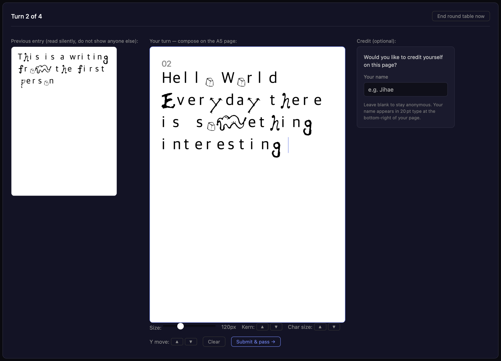
- Introduce myself
- Participant draw AlphabetI upload it on laptop
- Bookbinding
- Introduce myself
- Participant draw AlphabetI upload it on laptop
- Print (prepared activity)
- Bookbinding
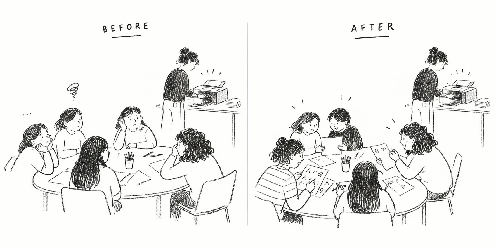
How I used AI
I connected REA to Codex and used it to adapt image-processing techniques from the free features of a scanning app, integrating them into my existing front end. With no prior backend experience, I also worked with Claude through an iterative conversation to build a local Python server that supported mobile submissions during workshops.
How the local server works
Please note that this is an ongoing project, so the code is incomplete.
Try From Hand to FontOpens the web app in a new tabHowever, the setup still requires everyone to be on the same Wi-Fi. When a venue does not provide Wi-Fi, I use my mobile hotspot, which currently supports only my laptop and three participants’ phones at a time. My next step is to adapt the code and move to an online server so participants can join using their own mobile data, without needing to be on the same Wi-Fi.
Get in touch at studiokiiowork@gmail.com to arrange a workshop for your team.